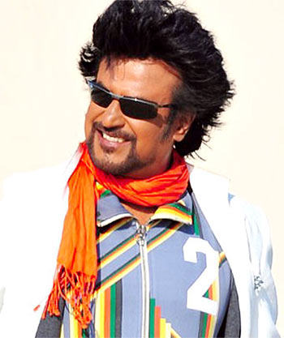
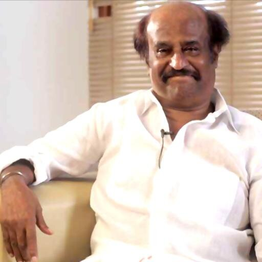

Superstar Rajinikanth
Shivaji Rao Gaekwad (born 12 December 1950), known by his mononymous stage name Rajinikanth, is an Indian film actor who works primarily in Tamil cinema. He began acting in plays while working in the Bangalore Transport Service as a bus conductor. In 1973, he joined the Madras Film Institute to pursue a diploma in acting. Following his debut in K. Balachander's Tamil drama Apoorva Raagangal (1975), his acting career commenced with a brief phase of portraying antagonistic characters in Tamil films.After earning ₹26 crore (equivalent to ₹55 crore or US$8.5 million in 2016) for his role in Sivaji (2007), he was the highest paid actor in Asia after Jackie Chan at the time. While working in other regional film industries of India, Rajinikanth has also appeared in the cinemas of other nations, including the American film Bloodstone (1988).
Early life
Rajinikanth was born on 12 December 1950, in a Maratha family in Bangalore. His mother was a housewife, and his father Ramoji Rao Gaekwad, a police constable, He was named Shivaji Rao Gaekwad after Chhatrapati Shivaji, a Maratha warrior King,and was brought up speaking Marathi at home and Kannada outside. Rajinikanth's ancestors hailed from a village called Mavdi Kade Pathar, in the present-day Pune district, Maharashtra. He is the youngest of four siblings in a family consisting of two elder brothers, Satyanarayana Rao & Nageshwara Rao and a sister, Aswath Balubhai.After his father's retirement from work in 1956, the family moved to the suburb of Hanumantha nagar in Bangalore and built a house there.When he was nine years old, he lost his mother. At the age of six, Rajinikanth was enrolled at the "Gavipuram Government Kannada Model Primary School" where he had his primary education. He was studious and "mischievous" with a great interest in cricket, football and basketball. It was during this time his brother enrolled him at the Ramakrishna Math, a Hindu monastery set up by Ramakrishna Mission. In the math, he was taught Vedas, tradition and history which eventually instilled a sense of spirituality in him. In addition to spiritual lessons, he also began acting in plays at the math. His aspiration towards theatre grew at the math and was once given an opportunity to enact the role of Ekalavya's friend from the Hindu epic Mahabharata. His performance in the play received praise from the audience and Kannada poet D. R. Bendre in particular. After sixth grade, Rajinikanth was enrolled at the Acharya Pathasala Public School and studied there till completion of his pre-university course. During his schooling at the Acharya Pathasala, he spent a lot of time acting in plays.
Awards and honours
Rajinikanth has received numerous awards for many of his films mostly in Tamil. He received his first Filmfare Award for Best Tamil Actor in 1984 for Nallavanuku Nallavan. Later he received Filmfare Award nominations for his performances in Sivaji and Enthiran . As of 2014, Rajinikanth has received six Tamil Nadu State Film Awards for his performances in various films. He also received numerous awards from Cinema Express and Filmfans' Association for his on-screen performances and off-screen contributions in writing and producing. Rajinikanth received the Kalaimamani award in 1984 and the M. G. R. Award in 1989, both from the Government of Tamil Nadu. In 1995, the South Indian Film Artistes' Association presented him with the Kalaichelvam Award. He was honoured with the Padma Bhushan and the Padma Vibhushan by the Government of India. He was selected as the Indian Entertainer of the Year for 2007 by NDTV, competing against the likes of Shahrukh Khan. The Government of Maharashtra honoured him with the Raj Kapoor Award the same year. He received the Chevalier Sivaji Ganesan Award for Excellence in Indian Cinema at the 4th Vijay Awards. Rajinikanth was also named one of the most influential persons in South Asia by Asiaweek. He was also named by Forbes India as the most influential Indian of the year 2010. In 2011, he was awarded the Entertainer of the Decade Award by NDTV for the year 2010 by the then Indian Minister for Home Affairs P. Chidambaram. In December 2013, he was honoured by NDTV as one among the "25 Greatest Global Living Legends". In 2014, he was presented with the "Centenary Award for Indian Film Personality of the Year" at the 45th International Film Festival of India held at Goa.
Culture
Rajinikanth has often been referred to as the most popular film actor in South India by the media and audiences. In 2015, a film about his fandom, For the Love of a Man, premiered at the 71st Venice International Film Festival. His popularity has been attributed to "his uniquely styled dialogues and idiosyncrasies in films, as well as his political statements and philanthropy". Many also cite reasons for Rajinikanth's popularity as coming from his larger-than-life super-hero appearance in many films, supported by gravity-defying stunts and charismatic expressions, all while attempting to maintain modesty in real-life.Almost every film of Rajinikanth has punchlines delivered by him in an inimitable style, and these punchlines often have a message or even to warn the film's antagonists. These dialogues are usually fabricated to create new ones or even taken in a comical way, but do not fail to create a sense of entertainment among viewers. It is suggested by the media that actresses such as Gouthami and Nayanthara got their initial breakthrough after co-starring with Rajinikanth very early in their careers, giving other aspiring actors the urge to work with him. Rajinikanth is also the only Indian actor to be featured in the Central Board of Secondary Education (CBSE) syllabus, in a lesson titled From Bus Conductor to Superstar. After opening his first official Twitter account in 2014, Rajinikanth received over 210,000 followers within 24-hours, which according to The Economic Times was deemed by social media research firms as the fastest rate of followers for any Indian celebrity, as well as among the top-10 in the world. Much like Chuck Norris facts, "Rajinikanth facts" or "Rajinikanth jokes" are widely circulated in text messages and memes over the Internet.
Unknown facts about Rajini
 When Rajini was working as a conductor his salary was around Rs.750. Rajinikanth was born to Jijabai and Ramoji Rao Gaikwad, a Maharashtrian couple living in Bangalore, and was named Shivaji Rao Gaikwad. He started off his acting career with mythological Kannada plays. His most prominent role was that of Duryodhana. His friend Raj Bahadur, with whom he is still close, encouraged him to pursue his dreams and become an actor. Bahadur asked him to enrol in the Madras Film Institute. After playing several negative roles and characters with grey shades, his first positive role was in S P Muthuraman's Bhuvana Oru Kelvikkuri. Rajinikanth's first big commercial success was Billa, a remake of the 1978 Amitabh Bachchan-starrer Don. Enthiran has been included as a case study in an IIM-A postgraduate elective course, Contemporary Film Industry: A Business Perspective. Meena is the only actress who has acted with him as a child artist and then as his heroine. A few of Rajini's fans started a political party called Desiya Dravadar Makkal Munnetra Kazhagam in 2008 to pressure him to enter politics. But he refused, saying that nobody can force him to enter politics or stop him from doing so. A few of Rajini's fans started a political party called Desiya Dravadar Makkal Munnetra Kazhagam in 2008 to pressure him to enter politics. But he refused, saying that nobody can force him to enter politics or stop him from doing so. The superstar's blockbuster movie Enthiran was originally supposed to be done by Kamal Haasan. Enthiran has been included as a case study in an IIM-A postgraduate elective course, Contemporary Film Industry: A Business Perspective. Rajinikanth usually goes to the Himalayas after the release of his films. Also to Bangalore however, is his favourite spot to hang out with his old buddies. Enthiran is the only Tamil film that made it into IMDb's Top 50 films from around the world list in 2010. Baasha, which released in 1995, established the actor as a superstar and broke several box-office records.
Latest News Number 1.
 TNCC chief Thirunavukkarasar meets Rajinikanth, says they discussed politics and farmers issue. Thirunavukkarasar described the meeting, which lasted nearly an hour, as a "routine meeting".
Latest News Number 2.
 The makers of Rajinikanth's '2.0' have postponed the film's release date from Diwali this
year to January 25, 2018. "We are working on world class VFX, and it is taking time.
The makers of Rajinikanth's '2.0' have postponed the film's release date from Diwali this
year to January 25, 2018. "We are working on world class VFX, and it is taking time.
Latest News Number 3.
 Malaysian Prime Minister Najib Razak met superstar Rajinikanth at his residence here on Friday.
"Just had a very warm and friendly meeting with Rajinikanth,at his home," Razak tweeted on Friday.
Malaysian Prime Minister Najib Razak met superstar Rajinikanth at his residence here on Friday.
"Just had a very warm and friendly meeting with Rajinikanth,at his home," Razak tweeted on Friday.